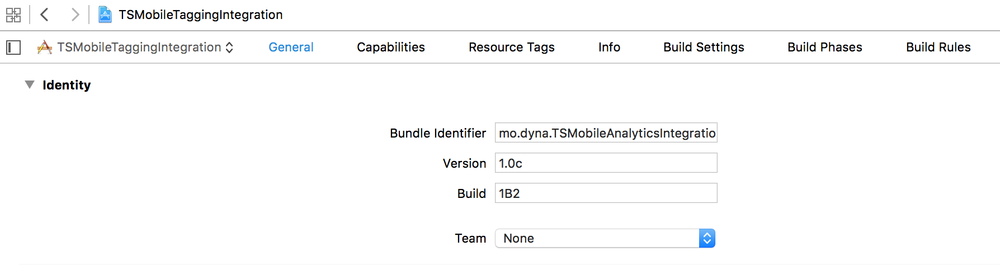
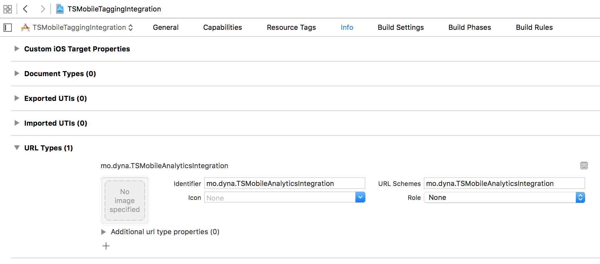
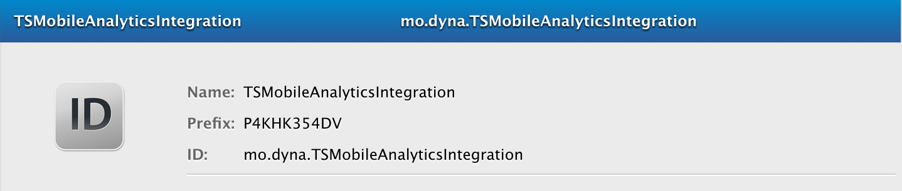

DevelopersGuide Document
Developer’s Guide - TNS Sifo Mobile Analytics SDK for iOS
Overview
This SDK will help you measure the usage of your application using TNS Sifo’s services. The SDK zip file contains three folders:
Framework folder with the TSMobileAnalytics.framework file that needs to be included and linked with in your project.
Documentation folder with Developer’s Guide and API Reference in HTML and Apple Docs (docset) format.
Samples folder with code samples in Objective-C and Swift.
Lowest supported iOS version is iOS 9
Sending Tags
In order to measure traffic, your application needs to send HTTP-requests to a server provided by Mobiletech or Codigo Analytics, using URLs following a specified pattern with information about your application.
Each of these HTTP-requests is called a “tag”. To get a good measure of the usage, your application should send a tag every time a new view or page of content is shown to the user. This tag should contain information about what content the user is seeing. For example when the user opens the application and its main view is shown, a tag should be sent – telling the server that the main view is displayed. When the user shows a list, an article, a video or some other page in your application, another tag should be sent, and so on.
The framework can help you with the whole process of sending them to the server. The only thing it needs from you is for you to tell it when a view has been shown, and what content it has. It also needs some information about your application, which is specified below:
Available Tags
Customer ID (CPID – 4 or 32 digits) - required
The customer ID provided by TNS Sifo, Mobiletech or Codigo Analytics. This information will be included in the attribute called “cpid” in the tags sent to the server.
Application name (type – max 244 characters) - required
The name of your application – the framework will add platform before the name (i.e “APP_IPHONE_” or “APP_IPAD_”) so it does not have to be included in the name. This information will be included in the attribute called “ref” in the tag.
Category (cat - max 255 characters)
The current category or name of the page that the user is browsing. This value tells us what the user is doing right now. If he is reading an article about sports in your application, the value might be “sports”. If he is browsing a set of football scores, the value might be “sports/scores/football”. If the user is on the main view of the application, the value might be “MAIN” or similar. This information will be included in the attribute called “cat” in the tag.
Content ID - optional (id – max 255 characters)
The value of the current article, resource or content within the category that is being browsed. If the current category does not provide different content, this value is not needed. For example, if the user is browsing a news article in your news application, the value should correspond to the identifier of the article used on your content server. If the user is reading article 123456 of an online newspaper, the value of category could be “News/Article” and the value of Content ID would then be “123456”. This information will be included in the attribute called “id” in the tag.
Content Name - optional (name – max 255 characters)
The name of the current article, resource or content within the category that is being browsed.
String encoding
Strings sent to the server will be encoded using UTF-8. If the String given to the framework contains characters that are not supported by this encoding, these characters will not be stored correctly in the statistics.
User identification across several applications
There are some restrictions regarding identifying a single user between several applications on the iOS platform. Since the use of the device´s UDID was deprecated in 2011, this framework obviously does not use that method to identify users, because it may cause applications to be rejected in the Apple App Store review process. Other hardware-based identifiers, such as MAC address, have the same risks.
The result of this is that several apps can no longer use a unified identifier for a user, which means he/she will be treated as different users on the server. However, there is one exception for this: Applications that are developed by the same team and uses the same bundle seed, can still use the same identifier for a single user across applications and identify this user as one.
In order to achieve this, the framework can use the iOS keychain to store a particular ID for a user. However, for this to work you need to set up your applications in a particular way. Please see the setup-section for more information on this.
Migration guide
Follow this guide if you previously have been using a version of the SDK less than 3.0.
Remove the TSMobileTagging.framework-file from your project.
Locate the new .framework-file, you will find it in a folder called “Framework” in your distribution package.
Add it to your project by dragging the file into your project navigator, drop in desired location.
Replace the import of the old framework with the new, you will get a build error where this needs to be done.
Replace your old init-call with the new one, like so:
[TSMobileAnalytics createInstanceWithCPID:@"CPID" applicationName:@"APPNAME"
trackPanelist:trackPanelist keychainAccessGroup:@"keychainAccessGroup"];
- Replace calls to track events and/or page views, with corresponding calls for the new framework, like so:
[TSMobileAnalytics sendTagWithCategories:@[@"your", @"category/ies"]
contentName:@"yourOptionalContentName"
contentID:@"yourOptionalContentId"
completion:completionBlock];
- If you are syncing the framework with the Sifo Internet app, replace your framework call inside your application’s openURL call, like so:
[[TSMobileAnalytics sharedInstance] application:application openURL:url options:options]
Other
The framework is distributed as a static framework, with slices for ARM and Intel, for you to include in your iPhone project. The files contain a set of functions, many of them are optional to use – you basically only need to implement three methods to get the measurement to work.
The framework will take care of threading for you, so you do not need to think about running the code in a separate thread.
Setup
Importing the framework into your project
To use the framework, you add it to your iPhone application project.
You can do this the following way:
Extract the framework zip file in any desired location.
Right-click on the Framework-group in the Project Navigator in Xcode.
Select “Add Files to <Your Project Name>…”
Browse to where you extracted the framework and select MobileAnalytics.framework. Check the checkboxes for the targets that should link to it and click “Add”.
The targets that you added the framework to also needs to link with Security.framework. You can verify that that is the case by going to the Build Phases tab for the target you want to verify.
If Security.framework is missing from the list of libraries to link against you can add it by pressing the “+”-button and choosing it from the list of system libraries in the sheet that is presented.
Integrating with SIFO Internet app to tag TNS Sifo Panelists
Panelist app integration is available to both WebView based apps and native apps. The purpose of this integration is to identify the user as a certain panelist. This is achieved by receiving a panelist Id string from the Panelist app, and setting that Id as a cookie in your app’s shared HTTPCookieStorage. This communication is handled by setting some predefined URL schemes in your app.
To allow the framework to integrate with the Panelist app you need to implement a method in your app’s App delegate. In this method you then forward those calls to the framework to so it can save the data it needs in your apps user defaults database to track the panelist. You also need to add your app’s bundle identifier as a custom URL-scheme so that the Panelist app can find your app.
- Add a custom URL-scheme to your app that matches the bundle identifier of your application. You can find your app’s bundle identifier in the ”General” tab of your application’s target. You then enter this bundle identifier in all lowercase letters as a custom
URL-scheme under the ”Info” tab for your application’s target, as shown in the second screenshot below.
Screenshot of the Xcode target ”General”-tab where will find your app target’s Bundle Identifier.

Screenshot of the Xcode target ”Info”-tab where you define custom URL-schemes:  While you’re making changes in the info.plist, you might as well add some settings needed to allow that your app to open the Panelist app. The easiest way to do these changes, is to show the version editor, by clicking the button with the top right of Xcode (see image below).
After the changes you’ve already made, paste in the following:
<key>LSApplicationQueriesSchemes</key> <array> <string>se.tns-sifo.internetpanelen</string> <string>se.tns-sifo.sifopanelen</string> </array>- To have this custom URL-scheme picked up by the framework you have to implement the method - application:openURL:sourceApplication:annotation: in your app’s delegate and forward it’s arguments to the same method as implemented by the framework. At this point you already need to have instantiated the framework with the createInstance method as described above.
```Objective-C iOS9 or newer, use this syntax: - (BOOL)application:(UIApplication )application openURL:(NSURL )url options:(NSDictionary<UIApplicationOpenURLOptionsKey, id> *)options { return [[TSMobileAnalytics sharedInstance] application:application openURL:url options:options];
SWIFT use func application(_ app: UIApplication, open url: URL, options: [UIApplicationOpenURLOptionsKey: Any] = [:]) -> Bool { return TSMobileAnalytics.sharedInstance().application(app, open: url, options: options) }
```
If you already implementws this method, you can use the url argument to differentiate which URL-scheme that is responsible for the method getting invoked.
In this example the url parameter would be: mo.dyna.TSMobileAnalyticsIntegration:{panelist_identifier}
If you successfully implement the integration above the framework will store the panelist identifier in your apps user defaults database under the key “se.tns-sifo.cookiekey”.
It will use this identifier in a cookie set in your app’s NSHTTPCookieStorage. This will allow TNS Sifo to track the panelist’s traffic on participating sites. The cookie is limited to domains used by TNS Sifo.
For WebView based apps this is all that’s needed to integrate with the panelist tracking. These cookies are then sent for the javascript or image-loading tracking done on the webpages of your site. That said, you do not need to make any requests from your app like the ones native apps do by sendTagWithCategories etc.
Please note that steps 1 and 2 are crucial for a successful implementation in a hybrid app. Further more please make sure that your CPID (required parameter) and other optional parameters do match the ones setup in the SIFO-tags implemented by the webpage you wish to track.
Another note: The built-in support for WebView is limited to UIWebView, and does not work with the WKWebView introduced in iOS 8, please read more about the cookie limitations in this discussion thread: http://stackoverflow.com/questions/24464397/how-can-i-retrieve-a-file-using-wkwebview/24982211#24982211. As a workaround, you need to send tags manually as in a native app integration. It was later fixed in iOS11, but then broken again in 11.3. If you want to integrate using WKWebKit using you need to do research on how to access cookies from WKWebKit. Using Javascript is the most common way of solving this.
4. To test the integration with the “Sifo Internet”-app please download either from the App Store. When you create a new instance of the framework with trackPanelist: set to TRUE, if so it automatically opens the “TNS Sifo Internet app" to check if you are a logged in respondent. You should be redirected back to your own App.
The information about the TNS Sifo application state is stored in the framework. If you now close your app fully and reopen it you should not be redirected to the TNS Sifo Internet App. In approximately one week later we will check once more if the TNS Sifo Internet App state has changed. If the above redirection works as described the TNS Sifo Internet App integration is working correctly.
Preparing your application to use the keychain for user identification
These steps are only needed if you are interested in identifying one user in more than one of your applications. If say, your team has more than one app installed on the user’s device, and you wish to share the panelist ID between these applications.
Note! If you do not wish to use the keychain functionality, simply set the keychainAccessGroup-parameter to nil in the framework init-call.
In order for this to work, all applications involved must be set up according to these steps. Also they must all share the same “Bundle seed”. This is usually the case with all applications developed by the same Apple Developer Team.
To verify that your applications have the same bundle seed, log in to your Apple Developer-account, and go to the provisioning portal and navigate to your list of App ID’s. Click on the app name of the app you wish to know the bundle seed of, to expand further information. The bundle seed is listed under “Prefix”.

In Xcode, go to your project settings and to the “Capabilities”-tab and activate Keychain sharing by setting the toggle to “ON”. In the Keychain Groups textfield enter the name of the property to use when storing user identification, for example ABCDE12345.TNSSIFO, where ABCDE12345 is your bundle seed.
When launching the framework in your application, use the name of this keychain access group as the parameter “keyChainAccessGroup”, when initiating the framework. See next chapter for a code example.
Code implementation
Basic functionality
To get started with the tagging, you only need 2 methods.
Use createInstanceWithCPID:applicationName:trackPanelist:keychainAccessGroup: to create an instance of the framework and specify application name and customer ID.
Use sendTagWithCategories:contentName:contentId:completion: to send a tag to the server when a view is shown in your application.
Implementation steps
Import the framework header <TSMobileAnalytics/TSMobileAnalytics.h> in your App’s delegate and any other class where you want to perform tagging.
Turn on debug-prints to see that the framework is working properly by calling the setLogPrintsActivated method as shown below. (this line can be removed once you have verified that the tagging is working properly)
Initialize the framework by calling the createInstance method as shown below.
In the App Delegate’s application:didFinishLaunchingWithOptions
[TSMobileAnalytics` createInstanceWithCPID:@“2383” applicationName:@“mobil.sifo-test” trackPanelist:YES keychainAccessGroup:@“mo.dyna.TSMobileAnalyticsIntegration”];
`
…where cpid is a String holding your Customer ID and name is a String with the name of your application. The CPID must only contain digits and may not be longer than 32 characters. The application name may not be longer than 244 characters.
It can also be a good idea to make sure that createInstance does not return nil, which means that something was wrong with your input data. If this happens you will also get an error print in the log, if log prints has set to activated.
- Now, use the following methods to send a tag:
In the viewWillAppear-method or any other place where your application displays a view or page that should be tagged:
OBJECTIVE-C
[TSMobileAnalytics sendTagWithCategories:@[@“your”, @“category/ies”]
contentName:@“yourOptionalContentName”
contentID:@“yourOptionalContentId”
completion:^(BOOL success, NSError *error) {}];
SWIFT
TSMobileAnalytics.sendTag(withCategories: [“category-testios”], contentName: “”, contentID: “123-contentID”) { (success, error) in
if let tError = error {
// Handle error.
print(“Error: (tError.localizedDescription)”)
}
… where category is an array of strings holding the current category or page that is being tagged, id is a String with the identifier of the current content, name is a String with the name of the current content (this function is available without this parameter). Maximum length of contentID, contentName and category is 255 characters, while the maximum length of extra is 100 characters.
The framework will now send a tag to the server with the information you provided, using a background thread.
Setup/Implementation checklist
- Add you bundleIdentifier as a custom URL-scheme. This is to make your app accessible for the Sifo Internet-app to perform a sync.
- Implement -openUrl: in your appdelegate, forward the call to the framework.
- Instantiate the framework with the createInstance-method. Make sure you use the correct parameters.
- Download the TNS Sifo Internet application from the app store, make sure the syncing works as expected.
Additional steps for a native implementation
- Implement the sendTag-method everywhere you wish to send a tag through the framework.
Options
If you want to use a category structure with subcategories, such as “News>Sports>Football”, you populate the categories array with each category in descending order.
[TSMobileAnalytics sendTagWithCategories:@[@"News", @"Sports", @"Football"]
contentName:@""
contentID:@""
completion:^(BOOL success, NSError *error) {
}];
…where categories is an array of Strings specifying the category structure. A maximum of 4 categories is allowed in the structure, and their names must not be longer than 62 characters each.
Specifying a keychain access group for user identification in several applications
If you have created a keychain access group for identifying a user in more than one application, as described in the “setup” section, pass your freshly created keychain access group identifier as a parameter when initializing the framework:
[TSMobileAnalytics createInstanceWithCPID:cpid applicationName:applicationName
trackPanelist:trackPanelist keychainAccessGroup:accessGroup];
where keyChainAccessGroup is the name of the group that you previously specified in the Keychain Sharing section in the project settings, for example: @“ABCDE12345.TNSSIFO”.
Identifying a single user
An UUID string will be persisted locally, to your app’s NSUserdefault storage. This value will be sent as a query parameter in your tag request, to identify request from one user.
Frequently asked questions
Q: My app does not sync with the Sifo Internet app. Why?
A: There can be a couple of things wrong. Please make sure that: - You have registered your app’s bundle identifier as a custom URL scheme in your target’s “Info”-tab, under “URL Types”. - You have implemented the openURL:-method in your app’s application delegate, and forwarded that call to the framework. For more thorough information and a step by step-guide, please read the section “Integrating with SIFO Internet app to tag TNS Sifo Panelists”, under “Setup”.
Additional information
For additional information about what can, or can’t, be tagged please reach out to TNS Sifo, contact information to be found in the end of this document.
Implementation check
Before the app is submitted to App Store, tests need to be performed according to instructions provided by TNS Sifo. Please contact TNS Sifo.
Update strategy
The framework is compatible with iOS 9 or above. Updates of the framework will be necessary to fix bugs, add features, handle changes on the servers or the platform etc. For this reason we want to make updating of the framework as easy and seamless as possible.
When a new version of the framework is the delivered, it should be possible to simply replace the folder containing the framework code and then update the software project. The update will always be kept backward-compatible as long as it’s possible, so that your old code will still work after the update.
To keep updating as seamless as possible, it is important that you:
Keep the framework code separated from the application code, in a separate folder in the project.
Inform us as soon as you find something that should be changed or improved.
Inform us as soon as you find a bug, memory or performance issue.
License information
This source files are released under an MIT license:
Contact information
Please send any questions or feedback to:
peter.andersson@tns-sifo.se
+46 (0)701 842 372
and/or
info@tns-sifo.se
+46 (0)8 507 420 00